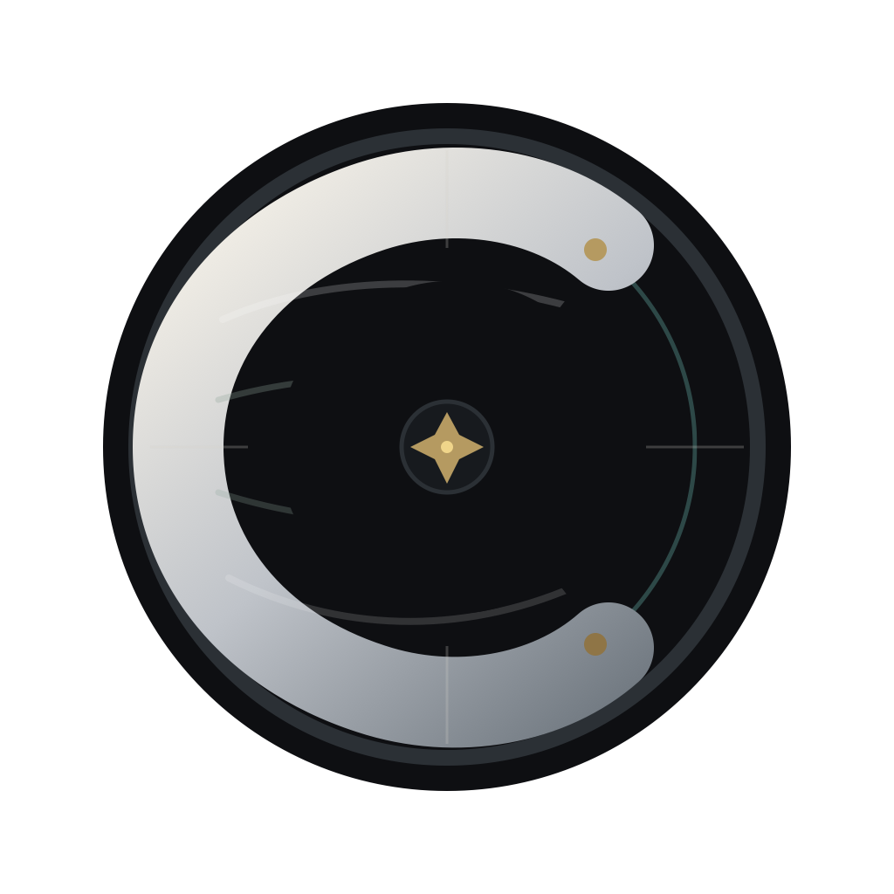
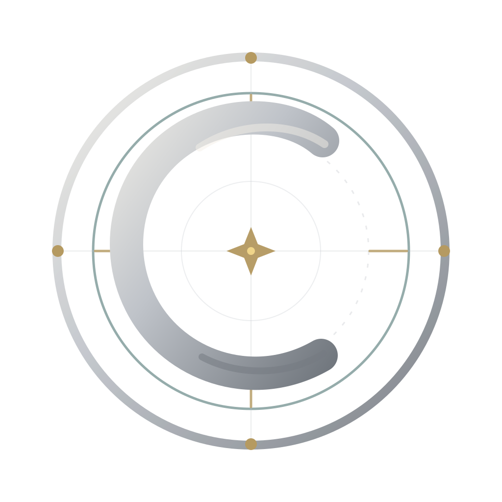

B: Cartographic Cut
Selected for a stronger, more ownable monogram with less literal compass noise and a better tie to cartographic contour language.
Locked
Alpha direction
Runtime wiring pending
Candidate B, Cartographic Cut, is locked as the Alpha logo direction. This packet preserves the review candidates and selected aliases for the runtime implementation slice.

Selected for a stronger, more ownable monogram with less literal compass noise and a better tie to cartographic contour language.

Still the correct strategic direction. The weak point is execution: too much detail competes with the C shape, and small sizes need a cleaner silhouette.
Conservative refinement. Keeps the seal, makes the C heavier, reduces ring noise, and keeps compass cues legible.
Locked. More owned and less literal. The C carries subtle contour lines while the compass elements recede.
Most app-icon oriented. Simple, bold, and readable, with just enough waypoint language to stay Cartenza.